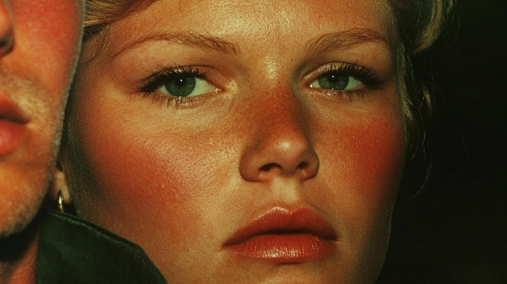
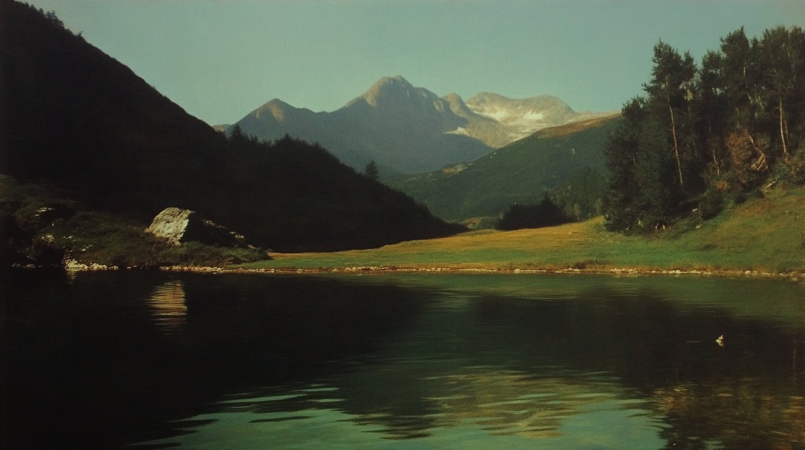

Seventies Art-House Palette
Four stills that look like 1970s European art cinema, with warm brown skin, deep green shadows and heavy grain. The look comes from mixing 14 Midjourney srefs with three profiles.
| Creator | Tatiana Tsiguleva @ciguleva |
|---|---|
| Platform | X |
| Model | Midjourney |
| Likes | 1K |
| Posted | 2025-02-06 |
| Visual style | Film / retro |
| Regional vibe | European |
| Genre | Daily life |
| Mood | Lonely / melancholy |
Prompt · from the post
--sref 653845861 1152456500 565858048 3378444519 1566182061 3537068100 1722650334 3664696729 236306076 3534786018::2 1500906155 3105375033 1122341361 683116229 --profile ueeo8az tlsfsfo em7wa59::4 --sw 500 --stylize 1000